Ogni contributo verifica fonti primarie e indica cosa cambia per il destinatario. Mai marketing, mai pareri travestiti.
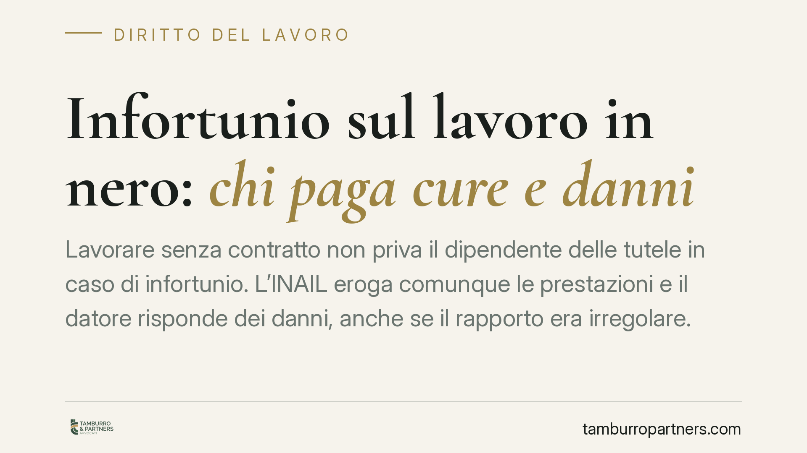
Lavorare senza contratto non priva il dipendente delle tutele in caso di infortunio. L'INAIL eroga comunque le prestazioni e il datore risponde dei danni, anche se il rapporto era …
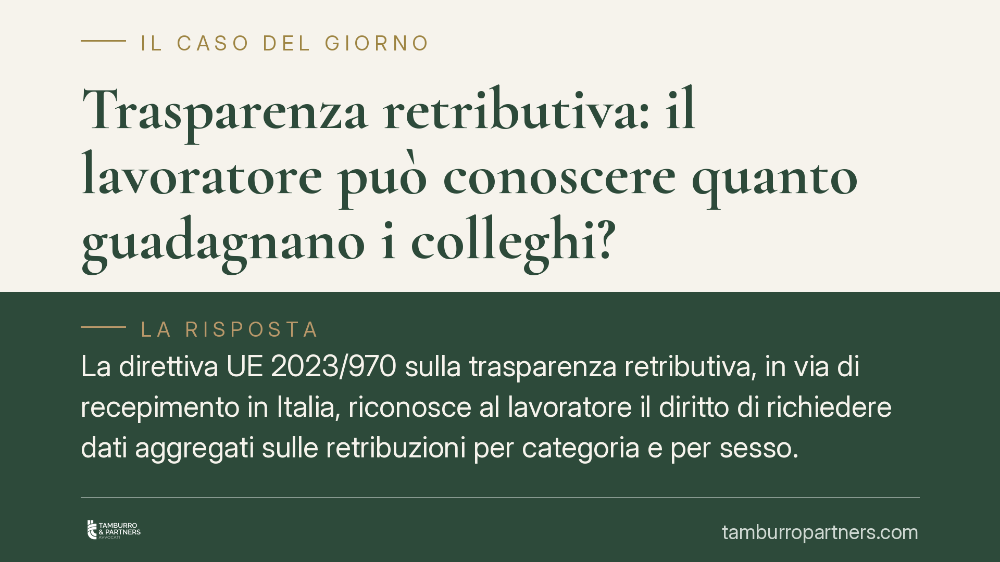
La direttiva UE 2023/970 sulla trasparenza retributiva, in via di recepimento in Italia, riconosce al lavoratore il diritto di richiedere dati aggregati sulle retribuzioni per cate…
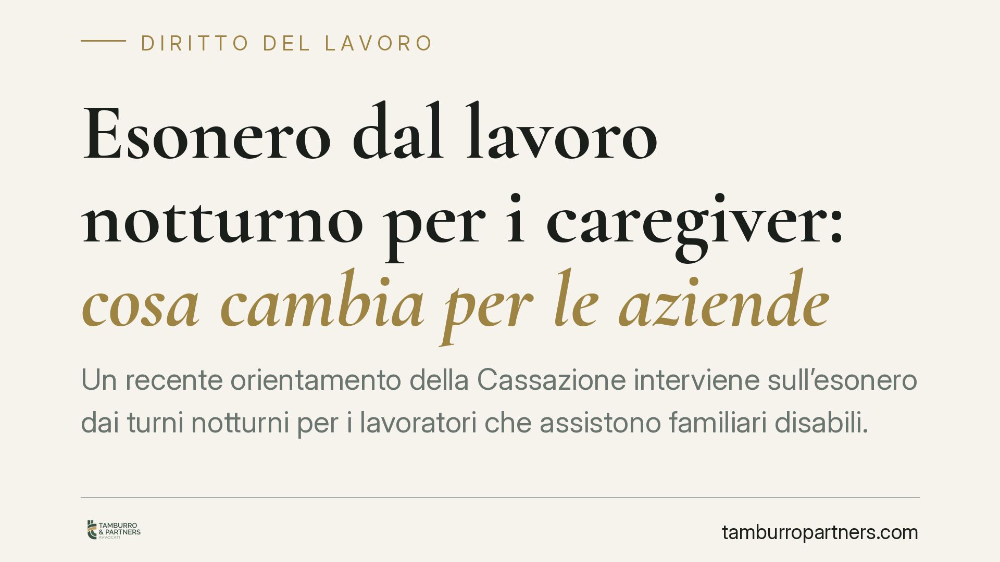
Un recente orientamento della Cassazione interviene sull'esonero dai turni notturni per i lavoratori che assistono familiari disabili. La pronuncia incide sull'organizzazione dei t…
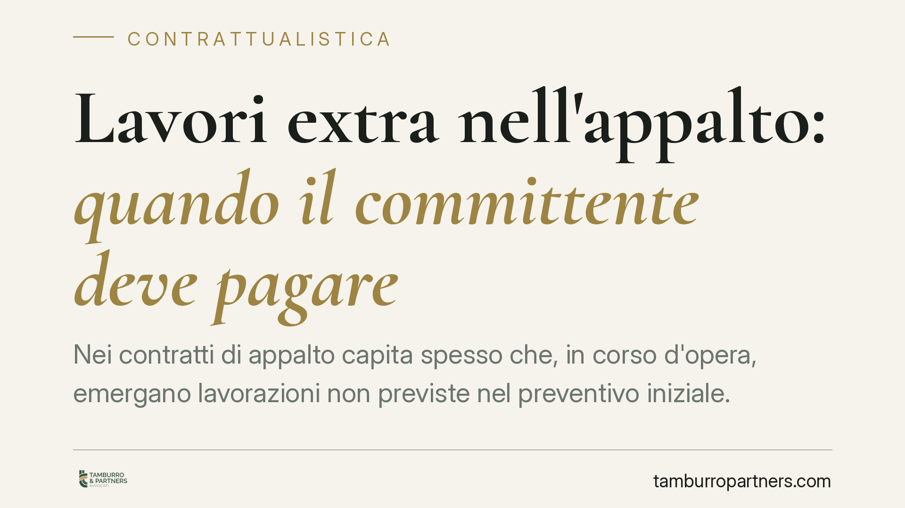
Nei contratti di appalto capita spesso che, in corso d'opera, emergano lavorazioni non previste nel preventivo iniziale. Chi le paga? La risposta non è scontata e dipende dall'auto…
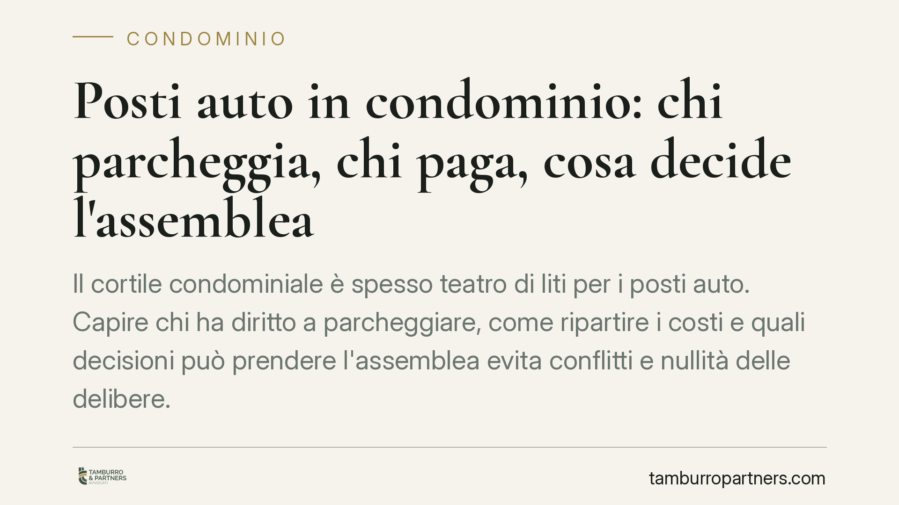
Il cortile condominiale è spesso teatro di liti per i posti auto. Capire chi ha diritto a parcheggiare, come ripartire i costi e quali decisioni può prendere l'assemblea evita conf…
Un solo giorno di ritardo nel pagamento del canone può aprire le porte allo sfratto. La risposta dipende dalla presenza di una clausola risolutiva espressa nel contratto, ma incont…
A luglio 2026 l'INPS erogherà in automatico la quattordicesima ai pensionati over 64 con redditi contenuti. Gli importi oscillano tra 336 e 655 euro e dipendono da reddito e anzian…
Un recente orientamento della Sezione Lavoro della Cassazione torna sul tema dei contenuti pubblicati sui social. Quando un dipendente attacca pubblicamente il datore o i colleghi …
La convocazione dell'assemblea condominiale inviata tramite PEC è valida anche se la casella non risulta iscritta in registri pubblici. Lo confermano una recente pronuncia del Trib…
Il datore versa in busta paga l'indennità di malattia anticipandola per conto dell'INPS. Ma se quel pagamento avviene per errore, può recuperare le somme trattenendole al lavorator…
La forma scritta dei contratti bancari resta uno dei terreni più contesi in giudizio. La Cassazione torna sulla questione dell'assenza della sottoscrizione della banca, distinguend…
Rispettare le norme minime di sicurezza non basta a escludere la responsabilità del datore di lavoro per un infortunio. La Cassazione ribadisce che l'obbligo dell'art. 2087 del Cod…
Il datore di lavoro può collocare il dipendente in ferie senza il suo consenso? La risposta è articolata: il potere organizzativo del datore esiste, ma incontra limiti precisi fiss…
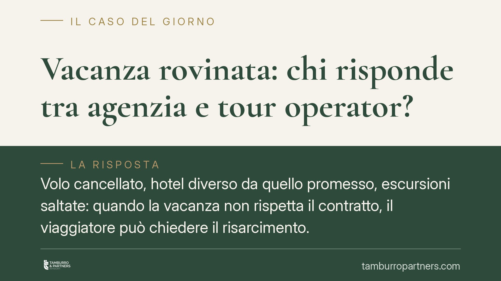
Un volo cancellato, un hotel diverso da quello promesso, un trasferimento mai arrivato. Quando la vacanza salta, il consumatore deve sapere a chi chiedere il risarcimento. La Cassa…
Il condominio che impiega un portiere o affida le pulizie a un'impresa assume vesti giuridiche diverse: datore di lavoro nel primo caso, committente nel secondo. Da questa distinzi…
La forma scritta è un requisito essenziale dei contratti bancari. Una recente pronuncia di merito ha ribadito che la sua mancanza determina una nullità che il giudice può rilevare …
Un creditore del condominio che non viene pagato ha diritto di conoscere chi sono i condòmini morosi per agire direttamente nei loro confronti. L'amministratore che rifiuta questa …
La Legge di Bilancio 2026 interviene sui premi di risultato, con l'annunciata riduzione dell'imposta sostitutiva e un possibile innalzamento del limite agevolabile. Le misure atten…
Chi occupa un immobile senza un contratto scritto non sfugge agli obblighi economici. La Corte di Cassazione (ord. 9256/2021) ha ribadito che, una volta richiesta la restituzione d…
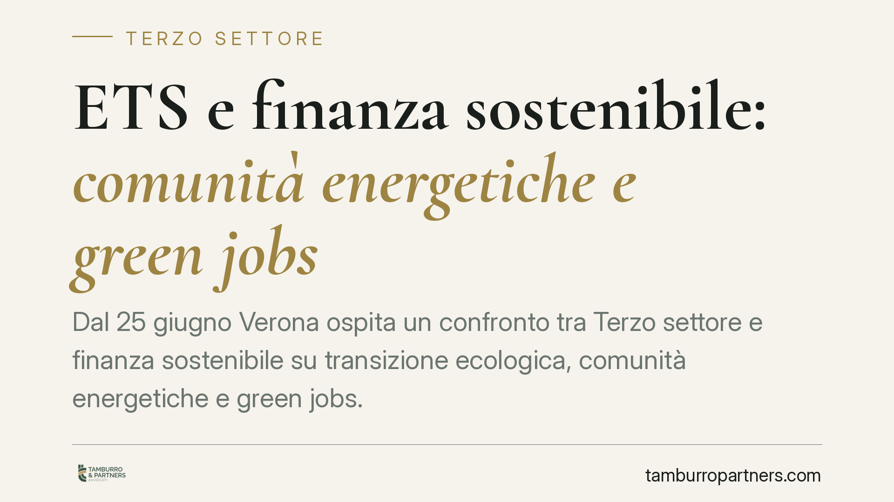
Dal 25 giugno Verona ospita un confronto tra Terzo settore e finanza sostenibile su transizione ecologica, comunità energetiche e green jobs. Il tema interessa direttamente gli ent…
Il Tribunale di Torino ha stabilito che la provvigione del mediatore immobiliare non può essere ridotta per un presunto inadempimento se il cliente non prova il danno subito. Confe…
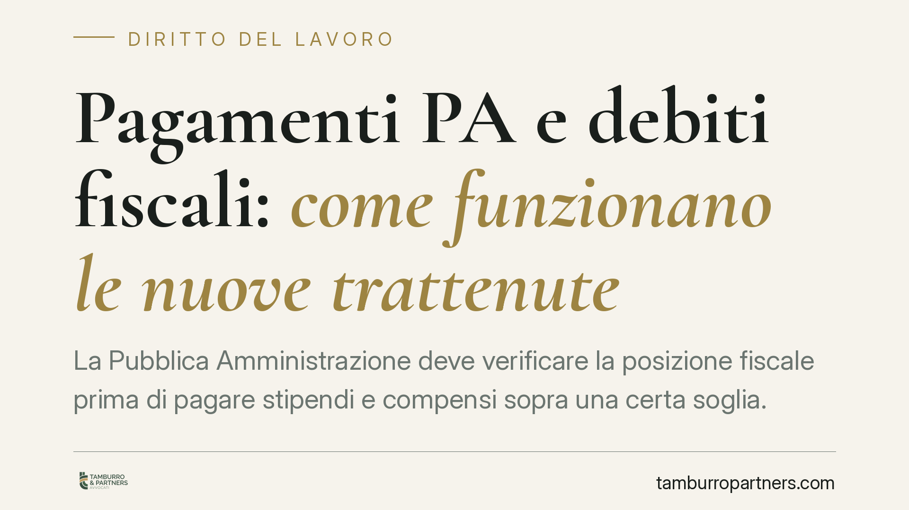
La Pubblica Amministrazione deve verificare la posizione fiscale prima di pagare stipendi e compensi sopra una certa soglia. In presenza di debiti iscritti a ruolo oltre 5.000 euro…
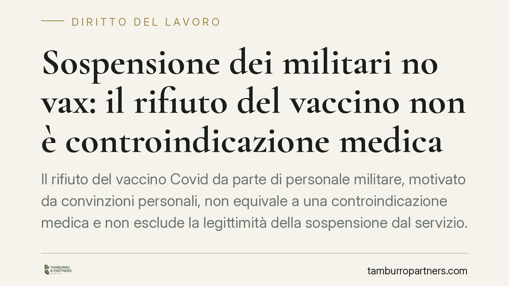
Il rifiuto del vaccino Covid da parte di personale militare, motivato da convinzioni personali, non equivale a una controindicazione medica e non esclude la legittimità della sospe…
Un finanziamento può essere travolto da nullità quando l'operazione viola norme penali a presidio della corretta gestione del credito. Ma il confine tra nullità del contratto e mer…
La Corte di Cassazione torna sul tema della comunicazione del verbale assembleare. L'invio tramite email ordinaria, priva di valore certo, non è idoneo a far decorrere il termine d…
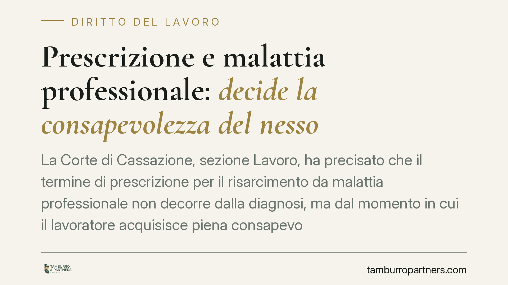
La Corte di Cassazione, Sezione Lavoro, torna sul tema della prescrizione nel risarcimento da malattia professionale. Il termine decennale non parte dalla diagnosi, ma dal momento …
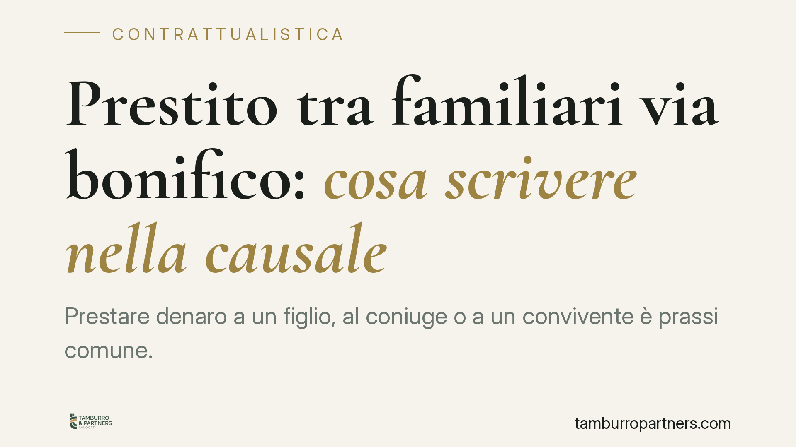
Prestare denaro a un figlio, al coniuge o a un convivente è prassi comune. Ma se la somma transita via bonifico senza una causale chiara, il rischio è duplice: che l'erario la cons…
La Corte di Cassazione, Sezione Lavoro, ha confermato il licenziamento per giusta causa di un dipendente pubblico che alterava il gestionale aziendale per accreditarsi ferie non sp…
La Corte di Cassazione ha chiarito che scale, ballatoi e altri manufatti di collegamento tra edifici autonomi rientrano tra le parti comuni quando manca un titolo di proprietà cont…
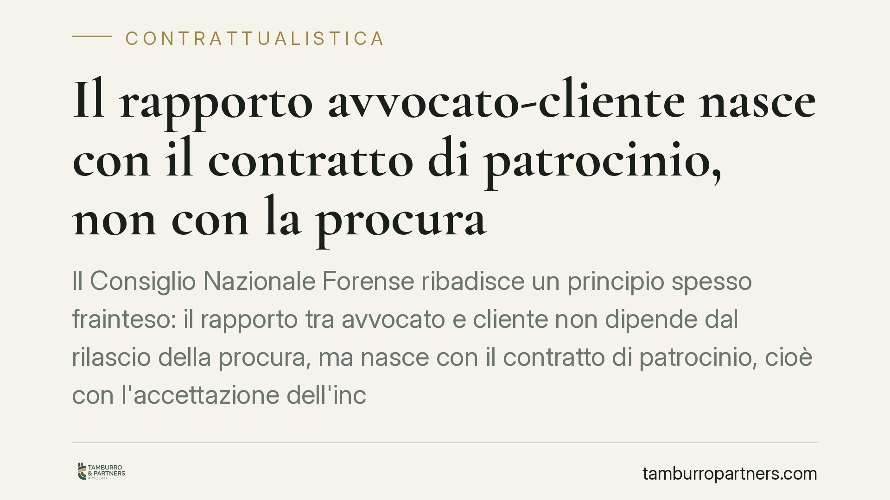
Il Consiglio Nazionale Forense ribadisce un principio spesso frainteso: il rapporto tra avvocato e cliente non dipende dal rilascio della procura, ma nasce con il contratto di patr…